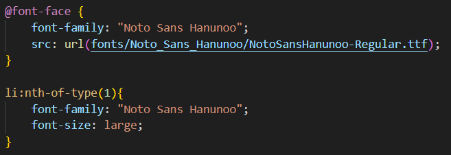

Standaard font word laten zien, (De Flash of unstyled techniek)
gebeurt bij de browsers:
- Chrome (Blink-engine)
- Firefox (Gecko-engine)
- Edge (moderne versie, gebaseerd op Chromium)
- Opera
gebeurt bij de browsers:
gebeurt bij de browsers:
Wanneer de font-weight niet correct is ingesteld, kan dit verschillende visuele en functionele problemen veroorzaken in je tekstweergave.Wanneer de font-weight niet correct is ingesteld, kan dit verschillende visuele en functionele problemen veroorzaken in je tekstweergave.Wanneer de font-weight niet correct is ingesteld, kan dit verschillende visuele en functionele problemen veroorzaken in je tekstweergave.
Als je het font bestand zelf host kan je hem met @fontface definiëren en later in het CSS bestand benaderen. 
door in de head van te html te linken naar een CDN (content delivery network) met link of, in dit geval google fonts
Werkt het of werkt het niet?